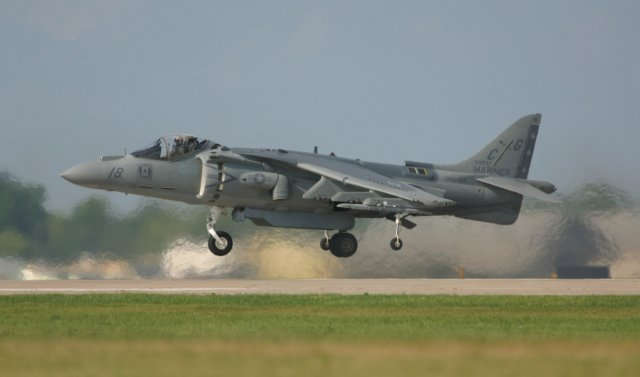
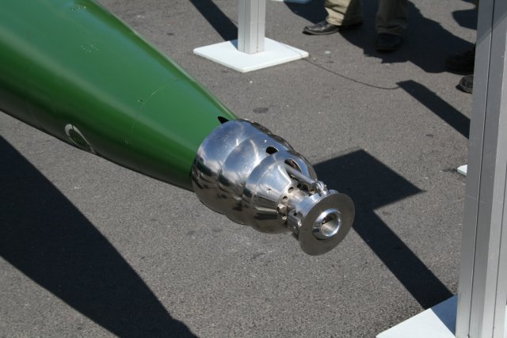

Air Blowing Applications
When the naturally induced airflow over a moving aerodynamic device, such as a wing, just isn't enough to satisfy design requirements then strategic air or gas blowing is always an option to enhance the device's performance.
 Brabham BT46 'Fan Car'License: CC BY 2.0, edvvc
Brabham BT46 'Fan Car'License: CC BY 2.0, edvvc
Blown Flap
Air being blown relative to an airfoil or wing, also called a boundary layer control system or blown flap, is a well known means to re-energize a slowing boundary layer toward the rear of an airfoil. The extra energy prevents flow separation allowing a higher angle of attack and therefore extra lift compared to the un-blown trailing edge.
Laminar Flow
By blowing or sucking air at a strategic location on the top (suction) surface of an airfoil it is possible to maintain a laminar boundary layer for an extended region along the airfoil, thus delaying the onset of a turbulent boundary layer and the increased skin friction drag that accompanies it.
Coanda Effect
Increasing the air speed over an entire airfoil by blowing will increase the lift (or downforce) due to the Coanda effect – ever wondered why the engine exhausts on a Formula 1 racecar are directed at the rear wing? This technique is also exploited by wing in ground-effect vehicles such as the Caspian Sea Monster or more formally an Ekranoplan.
 Caspian Sea Monster: Soviet KM Ekranoplan
Caspian Sea Monster: Soviet KM Ekranoplan
The front jet engines on an Ekranoplan can direct their exhaust nozzles toward the main wing, thus providing lift independently of forward speed to aid in lifting the giant vehicles clear of the water.
Hovercraft
A hovercraft uses a dedicated fan that blows air vertically down to produce a cushion of air for it to float on. An additional horizontal fan blows air horizontally to propel the hovercraft forward on its frictionless air cushion.
Fan Cars
By literally turning the hovercraft concept on its head i.e., sucking air from under a vehicle, you create what is known in motor racing circles as downforce. Downforce is an essential ingredient for a successful racecar. The first car to employ a fan to create downforce was the Chaparral 2J 'sucker car' in 1970. An added benefit of the air sucked from below the car and blown behind it was a reduction in the car's drag, thus improving its performance even more.
Another car that exploited a fan to create downforce was the F1 Brabham BT46 'fan car' of 1978, which resoundingly won its first race and never raced again. Most forms of motor racing prohibit movable aerodynamic devices, such as fans, in an attempt to keep speeds within relatively safe limits. However, passive shaping to create downforce through diffusers is permitted in many formulas.
Thrust Vectoring
Thrust vectoring is a technique employed by the Harrier airplane to produce vertical/short take-offs and landings. Instead of a dedicated fan blowing vertically, as with a hovercraft, the Harrier can direct its jet engine exhaust nozzles vertically to counter its weight during takeoff and then once airborne can redirect the same nozzles horizontally for forward propulsion.
BAE McDonnell-Douglas AV8B Hovering at Oshkosh in 2003License: GNU Free Documentation License, Paul Maritz
The Joint Strike Fighter (F-35 Lightning II) that will replace the Harrier will be able to vector its main exhaust nozzle and also use a dedicated lift fan, similar to a hovercraft, to mimic the Harrier's vertical takeoff and landing capability.
Supercavitation
A novel use of blowing occurs in the Shkval torpedo, helping it achieve in excess of 370 km/h in water. It releases (or blows) a portion of its rocket exhaust gases out of its nose to aid a supercavitation effect that reduces its drag to the extent that it can travel at high speeds under water.
Shkval Underwater MissileCapable of immense underwater speed due to supercavitation
The Shkval torpedo essentially flies within a gas and water vapor bubble becoming an underwater missile.
Blowing Simulation
Simulation of air blowing or sucking is relatively straightforward using a panel method such as our Panel Flow add-on for Caedium. An inlet can simulate blowing and an outlet can simulate sucking. We look forward to adding your new application of air blowing or sucking to the list above.
Feedback
Questions? Ideas? Problems?

Recent blog posts
- CFD Simulates Distant Past
- Background on the Caedium v6.0 Release
- Long-Necked Dinosaurs Succumb To CFD
- CFD Provides Insight Into Mystery Fossils
- Wind Turbine Design According to Insects
- Runners Discover Drafting
- Wind Tunnel and CFD Reveal Best Cycling Tuck
- Active Aerodynamics on the Lamborghini Huracán Performante
- Fluidic Logic
- Stonehenge Vortex Revealed as April Fools' Day Distortion Field
 Get our Blog feed
Get our Blog feed
Comments
Brabham Fan Car
Brabham 'fan car' designer - Gordon Murray profiled:
Question on air thrust.
Hello Mr. Smith,
I am presently designing my first, and probably last, hovercraft. As I am a complete noob to all this, I am wondering if there is a formula that can compute the measured thrust needed of the engine/propeller, given the weight of myself (and materials of hovercraft) and the x,y dimensions of my rectangular surface of the hovercraft.
For example, if I was to use twin microturbines with 25 lbs of thrust each, what would be the necessary x,y dimensions of the hovercraft to elevate 200 lbs total? Or conversely, if my hovercraft is 3 ft. wide by 6 ft. long, with a total weight of 200 lbs, how much thrust would the engine(s) have to produce?
Thank you very much for any advice you can give me.
FWIW, I am looking at building myself a "hoverboard". Kind of like in Back to the Future :-). Of course, it would have to have a skirt and be a bit larger, and obviously not silent.
Hovercraft Design
Hi Eric,
While I'm no hovercraft expert, I think the key requirement for a successful hovercraft is to maintain an air cushion under the craft at a certain pressure. Pressure is defined as:
P = F / A
Where P = pressure, F = force and A = area.
So in your case assuming:
x g (= 32.174) = 6434(pound-force)Then Pressure P =
6434 / 2592 = 2.48200 / 2592 = 0.077 psig (pound-force per square inch gauge),where g is the acceleration due to gravity.On the other hand if you wanted to determine the minimum area for a given thrust then try:
Thrust-Force / Thrust-Area = Craft-weight / Craft-Area
Don't forget this type of calculation assumes ideal conditions, i.e., a perfect skirt seal - so it's only a starting point.
Hope this helps.
For an interesting discussion of hovercraft building try Scrapheap Challenge: Hovercraft.
[Edit] Thanks to 'A Mechincal Engineer' for pointing out 200lb = 200lbf
That is not the correct way
That is not the correct way to use gravity in the English system. If you were to use F=ma directly the mass would have to be in slugs, where there are 32.16 lb per slug, and a=g=32.16. If you wanted to leave the mass in pounds you would have to use a = g/gc where g and gc are 32.16, making 1 pound mass equal to 1 pound-force. In the SI system mass is already in kilograms, and g=9.81 and gc= 1.
So by your calculation F=P*A, F= 2.48 psi * 2592 in2 = 6428 lbf
by having 2.48 psi under that area he could lift over 3 tons.
You would only need .077 psi of static pressure to lift 200 lbs.
Stand Corrected
Thanks for pointing out my mistake. I was brought up on the metric system where kg and N are distinct. I've made the correction.
For the English units challenged, such as myself, who want to learn more about Pound-force try http://en.wikipedia.org/wiki/Pound-force